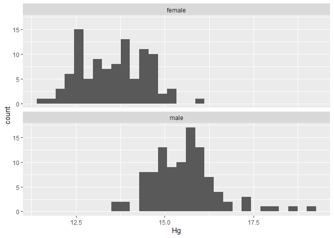
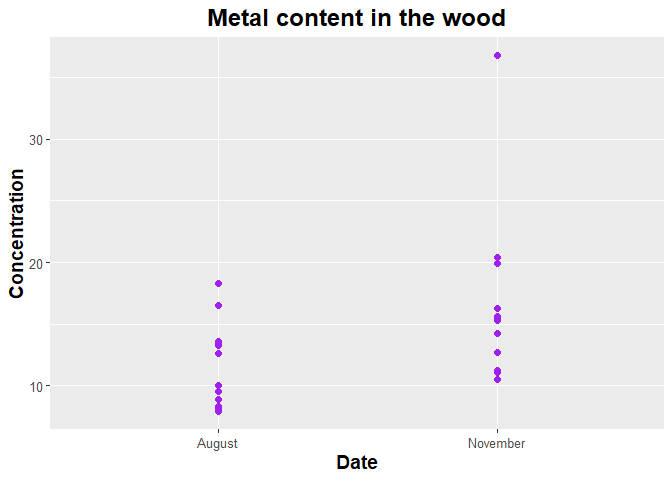
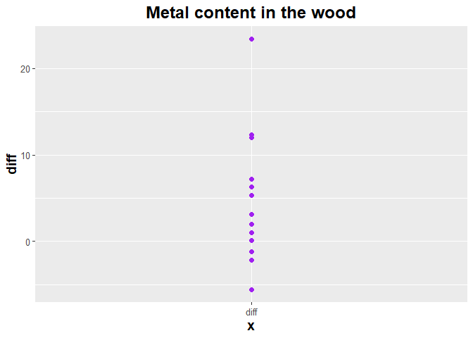
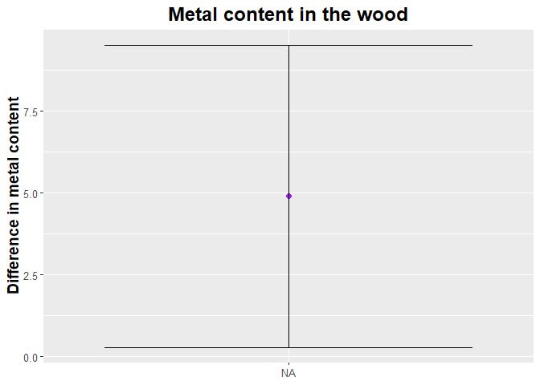
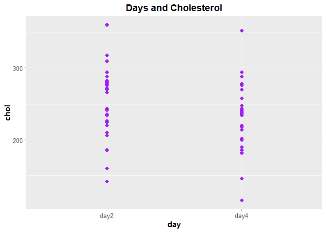
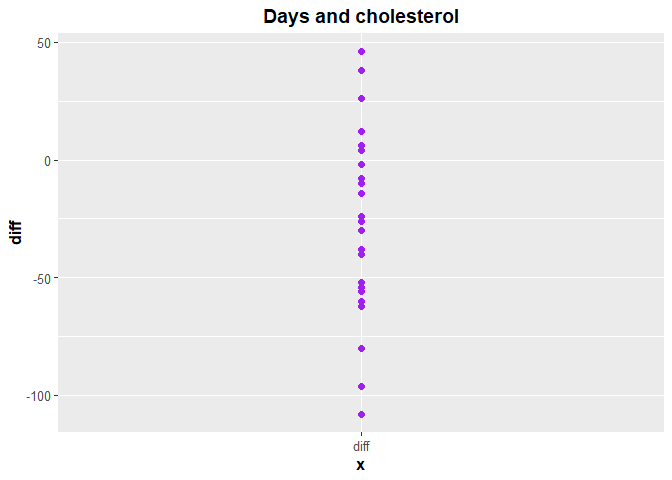
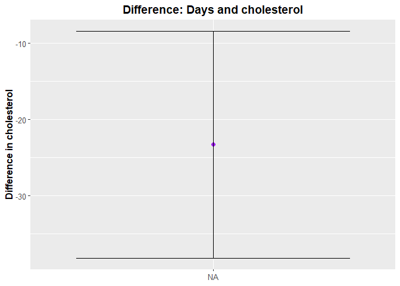

6. Continuous tests 2 populations
jjh
Last compiled on 12 December, 2022 09:20
library(reshape)##
## Attaching package: 'reshape'## The following objects are masked from 'package:plyr':
##
## rename, round_any## The following object is masked from 'package:Matrix':
##
## expand## The following object is masked from 'package:dplyr':
##
## rename## The following objects are masked from 'package:tidyr':
##
## expand, smithslibrary(reshape2)##
## Attaching package: 'reshape2'## The following objects are masked from 'package:reshape':
##
## colsplit, melt, recast## The following object is masked from 'package:tidyr':
##
## smithslibrary(coin)
library(tidyverse)
packageVersion("dplyr")## [1] '1.0.10'require(Rmisc)
require(BSDA)## Loading required package: BSDA##
## Attaching package: 'BSDA'## The following objects are masked from 'package:nlme':
##
## Gasoline, Wheat## The following objects are masked from 'package:carData':
##
## Vocab, Wool## The following object is masked from 'package:datasets':
##
## Orangerequire(simpleboot)## Loading required package: simpleboot## Simple Bootstrap Routines (1.1-7)Practice
For the following problems, use the data to conduct each noted test (note some sample sizes may be too small for these to all be good ideas!)
1
- The following data are human blood clotting times (in minutes) of individuals given one of two different drugs.
| Drug B | Drug G |
|---|---|
| 8.8 | 9.9 |
| 8.4 | 9.0 |
| 7.9 | 11.1 |
| 8.7 | 9.6 |
| 9.1 | 8.7 |
| 9.6 | 10.4 |
| 9.5 |
Test the hypothesis that the mean clotting times are equal for the two groups
- Estimating the variance from the data
- Using rank transform analysis
- Using a permutation test
- Using a bootstrap test
drug.df <- data.frame(
drugB = c(8.8, 8.4, 7.9, 8.7, 9.1, 9.6, NA),
drugG = c(9.9, 9.0, 11.1, 9.6, 8.7, 10.4, 9.5)
)drug3.df <-
drug.df %>%
pivot_longer(
cols = drugB:drugG,
names_to = "type",
values_to = "drug"
) %>%
mutate(type = as.factor(type))drug3.df## # A tibble: 14 × 2
## type drug
## <fct> <dbl>
## 1 drugB 8.8
## 2 drugG 9.9
## 3 drugB 8.4
## 4 drugG 9
## 5 drugB 7.9
## 6 drugG 11.1
## 7 drugB 8.7
## 8 drugG 9.6
## 9 drugB 9.1
## 10 drugG 8.7
## 11 drugB 9.6
## 12 drugG 10.4
## 13 drugB NA
## 14 drugG 9.5summarySE(drug3.df, measurevar = 'drug', groupvars = 'type', na.rm = T)## type N drug sd se ci
## 1 drugB 6 8.750000 0.5822371 0.2376973 0.6110203
## 2 drugG 7 9.742857 0.8182443 0.3092673 0.7567498wilcox.test(drug ~ type, drug3.df, na.action = "na.pass")## Warning in wilcox.test.default(x = DATA[[1L]], y = DATA[[2L]], ...): cannot
## compute exact p-value with ties##
## Wilcoxon rank sum test with continuity correction
##
## data: drug by type
## W = 7, p-value = 0.05313
## alternative hypothesis: true location shift is not equal to 0source("https://raw.githubusercontent.com/jsgosnell/CUNY-BioStats/master/code_examples/bootstrapjsg.R")bootstrapjsg(drug.df$drugB, drug.df$DrugG)##
## Attaching package: 'boot'## The following object is masked from 'package:lattice':
##
## melanoma## The following object is masked from 'package:survival':
##
## aml## The following object is masked from 'package:car':
##
## logit## Warning in boot.ci(a, conf): bootstrap variances needed for studentized
## intervals##
## "0.95" "% Confidence Interval" "8.33333333333333"
##
## "9.16666666666667" "p-value" "0"independence_test(drug ~ type, drug3.df)##
## Asymptotic General Independence Test
##
## data: drug by type (drugB, drugG)
## Z = -2.0726, p-value = 0.03821
## alternative hypothesis: two.sided2
- Data on plant heights (in cm) for plants grown with a new and old formulation of fertilizer can be found at https://raw.githubusercontent.com/jsgosnell/CUNY-BioStats/master/datasets/fertilizer.csv . Use the data to test the hypothesis that there is no difference in mean plant heights for the two groups
- Estimating the variance from the data
- Using rank transform analysis
- Using a permutation test
- Using a bootstrap test
Note you may need to cast this dataframe into a dataframe with a column for old and new outcomes. You’ll have to add a unique identifier. Try something like
fertilizer$ID <- 1:nrow(fertilizer)
fertilizer_wide <- dcast(fertilizer, ID~fertilizer, value.var = "height")fert <- read.csv('fertilizer.csv')fert## fertilizer height
## 1 old 48.2
## 2 old 54.6
## 3 old 58.3
## 4 old 47.8
## 5 old 51.4
## 6 old 52.0
## 7 old 55.2
## 8 old 49.1
## 9 old 49.9
## 10 old 52.6
## 11 new 52.3
## 12 new 57.4
## 13 new 55.6
## 14 new 53.2
## 15 new 61.3
## 16 new 58.0
## 17 new 59.8
## 18 new 54.8fert$ID <- 1:nrow(fert)
fertilizer_wide <- dcast(fert, ID ~ fertilizer, value.var = "height")summarySE(fert, measurevar = 'height', groupvars = 'fertilizer', na.rm = T)## fertilizer N height sd se ci
## 1 new 8 56.55 3.144156 1.111627 2.628580
## 2 old 10 51.91 3.370279 1.065776 2.410952wilcox.test(drug ~ type, drug3.df, na.action = "na.pass")## Warning in wilcox.test.default(x = DATA[[1L]], y = DATA[[2L]], ...): cannot
## compute exact p-value with ties##
## Wilcoxon rank sum test with continuity correction
##
## data: drug by type
## W = 7, p-value = 0.05313
## alternative hypothesis: true location shift is not equal to 0source("https://raw.githubusercontent.com/jsgosnell/CUNY-BioStats/master/code_examples/bootstrapjsg.R")bootstrapjsg(fertilizer_wide$new, fertilizer_wide$old)## Warning in boot.ci(a, conf): bootstrap variances needed for studentized
## intervals##
## "0.95" "% Percentile Confidence Interval"
##
## "1.81025040833945" "7.45981219374541"
##
## "p-value" "0.0013"independence_test(drug ~ type, drug3.df)##
## Asymptotic General Independence Test
##
## data: drug by type (drugB, drugG)
## Z = -2.0726, p-value = 0.03821
## alternative hypothesis: two.sided3
- Metabolic rates were measured in animals before and after administering a drug. Data is available at
https://raw.githubusercontent.com/jsgosnell/CUNY-BioStats/master/datasets/metabolic_rates.csv
Test the hypothesis that the drug has no effect on metabolic rate with using
- a Student’s t test
- a rank test
- a binary test
- bootstrapping
meta <- read.csv('meta.csv')meta## size before after
## 1 100 9 17
## 2 150 16 20
## 3 200 17 35
## 4 50 4 3
## 5 400 45 70
## 6 250 30 40
## 7 100 12 10
## 8 300 25 50
## 9 800 80 100A Student’s t test
t.test(meta$before, meta$after, paired = T)##
## Paired t-test
##
## data: meta$before and meta$after
## t = -3.3875, df = 8, p-value = 0.009536
## alternative hypothesis: true mean difference is not equal to 0
## 95 percent confidence interval:
## -19.982241 -3.795537
## sample estimates:
## mean difference
## -11.88889A rank test
wilcox.test(meta$before, meta$after, paired = T)## Warning in wilcox.test.default(meta$before, meta$after, paired = T): cannot
## compute exact p-value with ties##
## Wilcoxon signed rank test with continuity correction
##
## data: meta$before and meta$after
## V = 3, p-value = 0.02427
## alternative hypothesis: true location shift is not equal to 0meta_diff <- na.omit(meta$before - meta$after)
bootstrapjsg(meta_diff)## Warning in boot.ci(a, conf): bootstrap variances needed for studentized
## intervals##
## "0.95" "% Confidence Interval" "-18.2222222222222"
##
## "-5.44444444444444" "p-value" "0"4
- Endurance of the above animals was also measured. Data is available at
https://raw.githubusercontent.com/jsgosnell/CUNY-BioStats/master/datasets/endurance.csv
Test the hypothesis that the drug has no effect on using * a Student’s t test * a rank test * a binary test * bootstrapping
meta <- read.csv('meta.csv')meta## size before after
## 1 100 9 17
## 2 150 16 20
## 3 200 17 35
## 4 50 4 3
## 5 400 45 70
## 6 250 30 40
## 7 100 12 10
## 8 300 25 50
## 9 800 80 100A Student’s t test
t.test(meta$before, meta$after, paired = T)##
## Paired t-test
##
## data: meta$before and meta$after
## t = -3.3875, df = 8, p-value = 0.009536
## alternative hypothesis: true mean difference is not equal to 0
## 95 percent confidence interval:
## -19.982241 -3.795537
## sample estimates:
## mean difference
## -11.88889A rank test
wilcox.test(meta$before, meta$after, paired = T)## Warning in wilcox.test.default(meta$before, meta$after, paired = T): cannot
## compute exact p-value with ties##
## Wilcoxon signed rank test with continuity correction
##
## data: meta$before and meta$after
## V = 3, p-value = 0.02427
## alternative hypothesis: true location shift is not equal to 0A Binary test
Bootstrapping
meta_diff <- na.omit(meta$before - meta$after)
bootstrapjsg(meta_diff)## Warning in boot.ci(a, conf): bootstrap variances needed for studentized
## intervals##
## "0.95" "% Confidence Interval" "-18.3333333333333"
##
## "-5.55555555555556" "p-value" "1e-04"For the following problems, make sure you can justify the test you choose to use and carry it out
5
- Using data from Australian athletes (http://www.statsci.org/data/oz/ais.html for details), determine if the average male training at the Australian Institute of Sport differs in from the average female training at the site in mercury concentration (Hg).
ais <- read.csv('ais.csv')ais## Sex Sport RCC WCC Hc Hg Ferr BMI SSF X.Bfat LBM Ht
## 1 female BBall 3.96 7.50 37.5 12.3 60 20.56 109.1 19.75 63.32 195.9
## 2 female BBall 4.41 8.30 38.2 12.7 68 20.67 102.8 21.30 58.55 189.7
## 3 female BBall 4.14 5.00 36.4 11.6 21 21.86 104.6 19.88 55.36 177.8
## 4 female BBall 4.11 5.30 37.3 12.6 69 21.88 126.4 23.66 57.18 185.0
## 5 female BBall 4.45 6.80 41.5 14.0 29 18.96 80.3 17.64 53.20 184.6
## 6 female BBall 4.10 4.40 37.4 12.5 42 21.04 75.2 15.58 53.77 174.0
## 7 female BBall 4.31 5.30 39.6 12.8 73 21.69 87.2 19.99 60.17 186.2
## 8 female BBall 4.42 5.70 39.9 13.2 44 20.62 97.9 22.43 48.33 173.8
## 9 female BBall 4.30 8.90 41.1 13.5 41 22.64 75.1 17.95 54.57 171.4
## 10 female BBall 4.51 4.40 41.6 12.7 44 19.44 65.1 15.07 53.42 179.9
## 11 female BBall 4.71 5.30 41.4 14.0 38 25.75 171.1 28.83 68.53 193.4
## 12 female BBall 4.62 7.30 43.8 14.7 26 21.20 76.8 18.08 61.85 188.7
## 13 female BBall 4.35 7.80 41.4 14.1 30 22.03 117.8 23.30 48.32 169.1
## 14 female Row 4.26 6.20 41.0 13.9 48 25.44 90.2 17.71 66.24 177.9
## 15 female Row 4.63 6.00 43.7 14.7 30 22.63 97.2 18.77 57.92 177.5
## 16 female Row 4.36 5.80 40.3 13.3 29 21.86 99.9 19.83 56.52 179.6
## 17 female Row 3.91 7.30 37.6 12.9 43 22.27 125.9 25.16 54.78 181.3
## 18 female Row 4.51 8.30 43.7 14.7 34 21.27 69.9 18.04 56.31 179.7
## 19 female Row 4.37 8.10 41.8 14.3 53 23.47 98.0 21.79 62.96 185.2
## 20 female Row 4.90 6.90 44.0 14.5 59 23.19 96.8 22.25 56.68 177.3
## 21 female Row 4.46 5.70 39.2 13.0 43 23.17 80.3 16.25 62.39 179.3
## 22 female Row 3.95 3.30 36.9 12.5 40 24.54 74.9 16.38 63.05 175.3
## 23 female Row 4.46 9.50 41.5 14.5 92 22.96 83.0 19.35 56.05 174.0
## 24 female Row 5.02 6.40 44.8 15.2 48 19.76 91.0 19.20 53.65 183.3
## 25 female Row 4.26 5.80 41.2 14.1 77 23.36 76.2 17.89 65.45 184.7
## 26 female Row 4.46 5.60 41.1 14.3 71 22.67 52.6 12.20 64.62 180.2
## 27 female Row 4.16 5.80 39.8 13.3 37 24.24 111.1 23.70 60.05 180.2
## 28 female Row 4.49 7.60 41.8 14.4 71 24.21 110.7 24.69 56.48 176.0
## 29 female Row 4.21 7.50 38.4 13.2 73 20.46 74.7 16.58 41.54 156.0
## 30 female Row 4.57 6.60 42.8 14.5 85 20.81 113.5 21.47 52.78 179.7
## 31 female Row 4.87 6.40 44.8 15.0 64 20.17 99.8 20.12 52.72 180.9
## 32 female Row 4.44 10.10 42.7 14.0 19 23.06 80.3 17.51 61.29 179.5
## 33 female Row 4.45 6.60 42.6 14.1 39 24.40 109.5 23.70 59.59 178.9
## 34 female Row 4.41 5.90 41.1 13.5 41 23.97 123.6 22.39 61.70 182.1
## 35 female Row 4.87 7.30 44.1 14.8 13 22.62 91.2 20.43 62.46 186.3
## 36 female Netball 4.56 13.30 42.2 13.6 20 19.16 49.0 11.29 53.14 176.8
## 37 female Netball 4.15 6.00 38.0 12.7 59 21.15 110.2 25.26 47.09 172.6
## 38 female Netball 4.16 7.60 37.5 12.3 22 21.40 89.0 19.39 53.44 176.0
## 39 female Netball 4.32 6.40 37.7 12.3 30 21.03 98.3 19.63 48.78 169.9
## 40 female Netball 4.06 5.80 38.7 12.8 78 21.77 122.1 23.11 56.05 183.0
## 41 female Netball 4.12 6.10 36.6 11.8 21 21.38 90.4 16.86 56.45 178.2
## 42 female Netball 4.17 5.00 37.4 12.7 109 21.47 106.9 21.32 53.11 177.3
## 43 female Netball 3.80 6.60 36.5 12.4 102 24.45 156.6 26.57 54.41 174.1
## 44 female Netball 3.96 5.50 36.3 12.4 71 22.63 101.1 17.93 55.97 173.6
## 45 female Netball 4.44 9.70 41.4 14.1 64 22.80 126.4 24.97 51.62 173.7
## 46 female Netball 4.27 10.60 37.7 12.5 68 23.58 114.0 22.62 58.27 178.7
## 47 female Netball 3.90 6.30 35.9 12.1 78 20.06 70.0 15.01 57.28 183.3
## 48 female Netball 4.02 9.10 37.7 12.7 107 23.01 77.0 18.14 57.30 174.4
## 49 female Netball 4.39 9.60 38.3 12.5 39 24.64 148.9 26.78 54.18 173.3
## 50 female Netball 4.52 5.10 38.8 13.1 58 18.26 80.1 17.22 42.96 168.6
## 51 female Netball 4.25 10.70 39.5 13.2 127 24.47 156.6 26.50 54.46 174.0
## 52 female Netball 4.46 10.90 39.7 13.7 102 23.99 115.9 23.01 57.20 176.0
## 53 female Netball 4.40 9.30 40.4 13.6 86 26.24 181.7 30.10 54.38 172.2
## 54 female Netball 4.83 8.40 41.8 13.4 40 20.04 71.6 13.93 57.58 182.7
## 55 female Netball 4.23 6.90 38.3 12.6 50 25.72 143.5 26.65 61.46 180.5
## 56 female Netball 4.24 8.40 37.6 12.5 58 25.64 200.8 35.52 53.46 179.8
## 57 female Netball 3.95 6.60 38.4 12.8 33 19.87 68.9 15.59 54.11 179.6
## 58 female Netball 4.03 8.50 37.7 13.0 51 23.35 103.6 19.61 55.35 171.7
## 59 female Swim 4.36 5.50 41.4 13.8 82 22.42 71.3 14.52 55.39 170.0
## 60 female Swim 4.07 5.90 39.5 13.3 25 20.42 54.6 11.47 52.23 170.0
## 61 female Swim 4.17 4.90 38.9 12.9 86 22.13 88.2 17.71 59.33 180.5
## 62 female Swim 4.23 8.10 38.2 12.7 22 25.17 95.4 18.48 61.63 173.3
## 63 female Swim 4.46 8.30 42.2 14.4 30 23.72 47.5 11.22 63.39 173.5
## 64 female Swim 4.38 5.80 42.0 14.0 27 21.28 55.6 13.61 60.22 181.0
## 65 female Swim 4.31 5.30 41.1 13.9 60 20.87 62.9 12.78 55.73 175.0
## 66 female Swim 4.51 5.10 40.9 14.0 115 19.00 52.5 11.85 48.57 170.3
## 67 female Swim 4.13 7.00 39.7 13.1 124 22.04 62.6 13.35 51.99 165.0
## 68 female Field 4.48 9.50 36.5 13.3 54 20.12 49.9 11.77 51.17 169.8
## 69 female T400m 5.31 9.50 47.1 15.9 29 21.35 57.9 11.07 57.54 174.1
## 70 female Field 4.58 5.80 42.1 14.7 164 28.57 109.6 21.30 68.86 175.0
## 71 female Field 4.81 6.80 42.7 15.3 50 26.95 98.5 20.10 63.04 171.1
## 72 female Field 4.51 9.00 39.7 14.3 36 28.13 136.3 24.88 63.03 172.7
## 73 female Field 4.77 7.10 40.6 14.6 40 26.85 103.6 19.26 66.85 175.6
## 74 female Field 5.33 9.30 47.0 15.0 62 25.27 102.8 19.51 59.89 171.6
## 75 female Field 4.75 7.50 43.8 15.2 90 31.93 131.9 23.01 72.98 172.3
## 76 female T400m 4.11 7.30 38.7 12.4 12 16.75 33.8 8.07 45.23 171.4
## 77 female TSprnt 4.76 7.60 42.9 13.4 36 19.54 43.5 11.05 55.06 178.0
## 78 female T400m 4.27 6.90 44.1 14.7 45 20.42 46.2 12.39 46.96 162.0
## 79 female T400m 4.44 6.10 42.6 13.9 43 22.76 73.9 15.95 53.54 167.3
## 80 female T400m 4.20 6.50 39.1 13.0 51 20.12 36.8 9.91 47.57 162.0
## 81 female T400m 4.71 6.90 43.5 13.8 22 22.35 67.0 16.20 54.63 170.8
## 82 female T400m 4.09 6.40 40.1 13.2 44 19.16 41.1 9.02 46.31 163.0
## 83 female T400m 4.24 6.60 38.2 12.6 26 20.77 59.4 14.26 49.13 166.1
## 84 female T400m 3.90 6.00 38.9 13.5 16 19.37 48.4 10.48 53.71 176.0
## 85 female TSprnt 4.82 7.60 43.2 14.4 58 22.37 50.0 11.64 53.11 163.9
## 86 female T400m 4.32 6.80 40.6 13.7 46 17.54 54.6 12.16 46.12 173.0
## 87 female T400m 4.77 7.20 43.3 14.8 43 19.06 42.3 10.53 53.41 177.0
## 88 female TSprnt 5.16 8.20 45.3 14.7 34 20.30 46.1 10.15 51.48 168.0
## 89 female TSprnt 4.97 7.80 44.7 14.2 41 20.15 46.3 10.74 53.20 172.0
## 90 female Tennis 4.00 4.20 36.6 12.0 57 25.36 109.0 20.86 56.58 167.9
## 91 female Tennis 4.40 4.00 40.8 13.9 73 22.12 98.1 19.64 56.01 177.5
## 92 female Tennis 4.38 7.90 39.8 13.5 88 21.25 80.6 17.07 46.52 162.5
## 93 female Tennis 4.08 6.60 37.8 12.1 182 20.53 68.3 15.31 51.75 172.5
## 94 female Tennis 4.98 6.40 44.8 14.8 80 17.06 47.6 11.07 42.15 166.7
## 95 female Tennis 5.16 7.20 44.3 14.5 88 18.29 61.9 12.92 48.76 175.0
## 96 female Tennis 4.66 6.40 40.9 13.9 109 18.37 38.2 8.45 41.93 157.9
## 97 female Gym 4.19 9.00 39.0 13.4 69 18.93 43.5 10.16 42.95 158.9
## 98 female Gym 4.53 5.00 40.7 14.0 41 17.79 56.8 12.55 38.30 156.9
## 99 female Gym 4.09 4.90 36.0 12.5 66 17.05 41.6 9.10 34.36 148.9
## 100 female Gym 4.42 6.40 42.8 14.5 63 20.31 58.9 13.46 39.03 149.0
## 101 male Swim 5.13 7.10 46.8 15.9 34 22.46 44.5 8.47 61.00 172.7
## 102 male Swim 4.83 7.60 45.2 15.2 97 23.88 41.8 7.68 69.00 176.5
## 103 male Swim 5.09 4.70 46.6 15.9 55 23.68 33.7 6.16 74.00 183.0
## 104 male Swim 5.17 4.10 44.9 15.0 76 23.15 50.9 8.56 80.00 194.4
## 105 male Swim 5.11 6.70 46.1 15.6 93 22.32 40.5 6.86 78.00 193.4
## 106 male Swim 5.03 7.10 45.1 15.2 46 24.02 51.2 9.40 71.00 180.2
## 107 male Swim 5.32 6.00 47.5 16.3 155 23.29 54.4 9.17 71.00 183.0
## 108 male Swim 4.75 8.60 45.5 15.2 99 25.11 52.3 8.54 78.00 184.0
## 109 male Swim 5.34 6.60 48.6 16.5 35 22.81 57.0 9.20 77.00 192.7
## 110 male Swim 4.87 4.80 44.9 15.4 124 26.25 65.3 11.72 81.00 187.2
## 111 male Swim 5.33 5.20 47.8 16.1 176 21.38 52.0 8.44 66.00 183.9
## 112 male Swim 4.81 6.20 45.2 15.3 107 22.52 42.7 7.19 77.00 192.0
## 113 male Swim 4.32 4.30 41.6 14.0 177 26.73 35.2 6.46 91.00 190.4
## 114 male Row 4.87 8.20 43.8 15.0 130 23.57 49.2 9.00 78.00 190.7
## 115 male Row 5.04 7.10 44.0 14.8 64 25.84 61.8 12.61 75.00 181.8
## 116 male Row 4.40 5.30 42.5 14.5 109 24.06 46.5 9.03 78.00 188.3
## 117 male Row 4.95 5.90 45.4 15.5 125 23.85 34.8 6.96 87.00 198.0
## 118 male Row 4.78 9.30 43.0 14.7 150 25.09 60.2 10.05 78.00 186.0
## 119 male Row 5.21 6.80 44.5 15.4 115 23.84 48.1 9.56 79.00 192.0
## 120 male Row 5.22 8.40 47.5 16.2 89 25.31 44.5 9.36 79.00 185.6
## 121 male Row 5.18 6.50 45.4 14.9 93 19.69 54.0 10.81 48.00 165.3
## 122 male Row 5.40 6.80 49.5 17.3 183 26.07 44.7 8.61 82.00 185.6
## 123 male Row 4.92 5.40 46.2 15.8 84 25.50 64.9 9.53 82.00 189.0
## 124 male Row 5.24 7.50 46.5 15.5 70 23.69 43.8 7.42 82.00 193.4
## 125 male Row 5.09 10.10 44.9 14.8 118 26.79 58.3 9.79 83.00 185.6
## 126 male Row 4.83 5.00 43.8 15.1 61 25.61 52.8 8.97 88.00 194.6
## 127 male Row 5.22 6.00 46.6 15.7 72 25.06 43.1 7.49 83.00 189.0
## 128 male Row 4.71 8.00 45.5 15.6 91 24.93 78.0 11.95 78.00 188.1
## 129 male BBall 5.24 7.20 46.6 15.9 58 22.96 40.8 7.35 85.00 200.4
## 130 male BBall 4.54 5.90 44.4 15.6 97 20.69 41.5 7.16 73.00 195.3
## 131 male BBall 5.13 5.80 46.1 15.9 110 23.97 50.9 8.77 82.00 194.1
## 132 male BBall 5.00 6.70 45.3 15.7 72 24.64 49.6 9.56 79.00 187.9
## 133 male BBall 5.17 8.00 47.9 16.4 36 25.93 88.9 14.53 97.00 209.4
## 134 male BBall 4.89 7.50 41.6 14.4 53 23.69 48.3 8.51 90.00 203.4
## 135 male BBall 4.50 9.20 40.7 13.7 72 25.38 61.8 10.64 90.00 198.7
## 136 male BBall 4.84 8.30 46.3 15.9 39 22.68 43.0 7.06 74.00 187.1
## 137 male BBall 4.13 8.90 40.3 13.5 61 23.36 61.1 8.87 82.00 196.6
## 138 male BBall 4.87 7.40 43.5 15.0 49 22.44 43.8 7.88 72.00 186.1
## 139 male BBall 4.82 6.40 44.3 14.8 35 22.57 54.2 9.20 76.00 192.8
## 140 male BBall 4.73 6.70 42.8 14.9 8 19.81 41.8 7.19 70.00 195.2
## 141 male T400m 4.55 5.55 42.6 14.4 106 21.19 34.1 6.06 57.00 169.1
## 142 male T400m 4.71 7.20 43.6 14.0 32 20.39 30.5 5.63 67.00 186.6
## 143 male T400m 4.93 7.30 46.2 15.1 41 21.12 34.0 6.59 67.00 184.4
## 144 male T400m 5.21 7.50 47.5 16.5 20 21.89 46.7 9.50 70.00 187.3
## 145 male Field 5.09 8.90 46.3 15.4 44 29.97 71.1 13.97 88.00 185.1
## 146 male Field 5.11 9.60 48.2 16.7 103 27.39 65.9 11.66 83.00 185.5
## 147 male Field 4.94 6.30 45.7 15.5 50 23.11 34.3 6.43 74.00 184.9
## 148 male T400m 4.87 6.30 45.8 16.1 41 21.75 34.6 6.99 62.00 175.0
## 149 male T400m 4.41 4.50 44.2 15.0 101 20.89 31.8 6.00 67.00 185.4
## 150 male T400m 4.86 3.90 44.9 15.4 73 22.83 34.5 6.56 70.00 181.0
## 151 male T400m 4.91 9.00 46.3 15.4 56 22.02 31.0 6.03 64.00 176.0
## 152 male T400m 4.93 7.30 45.2 15.8 74 20.07 32.6 6.33 58.00 176.2
## 153 male T400m 4.20 4.50 41.2 14.3 58 20.15 31.5 6.82 57.00 174.0
## 154 male T400m 5.10 6.10 45.3 14.9 87 21.24 32.6 6.20 73.00 191.0
## 155 male T400m 4.50 6.10 42.2 14.7 139 19.63 31.0 5.93 54.00 171.0
## 156 male TSprnt 4.89 5.80 45.5 15.6 82 23.58 28.0 5.80 67.00 174.0
## 157 male TSprnt 5.13 4.00 44.1 15.2 87 21.65 33.7 6.56 66.00 180.2
## 158 male TSprnt 4.88 4.30 45.6 15.5 80 25.17 30.3 6.76 75.00 178.5
## 159 male Field 5.00 8.20 46.8 14.7 67 23.25 38.0 7.22 78.00 190.3
## 160 male Field 5.48 4.60 49.4 18.0 132 32.52 55.7 8.51 102.00 185.0
## 161 male Field 5.93 6.40 49.1 16.1 43 22.59 37.5 7.72 74.00 189.0
## 162 male Field 5.01 8.90 46.0 15.9 212 30.18 112.5 19.94 78.00 180.1
## 163 male Field 5.48 6.20 48.2 16.3 94 34.42 82.7 13.91 106.00 189.2
## 164 male TSprnt 5.16 8.40 44.4 15.5 213 21.86 29.7 6.10 68.00 182.6
## 165 male TSprnt 4.64 9.00 42.9 14.9 122 23.99 38.9 7.52 77.00 186.0
## 166 male TSprnt 6.72 7.10 59.7 19.2 76 24.81 44.8 9.56 69.00 174.9
## 167 male T400m 4.83 6.60 43.8 14.3 53 21.68 30.9 6.06 66.00 180.6
## 168 male T400m 5.34 7.60 48.3 16.2 91 21.04 44.0 7.35 62.00 178.6
## 169 male T400m 5.13 4.60 45.3 16.8 36 23.12 37.5 6.00 65.00 173.0
## 170 male T400m 4.68 4.80 43.0 14.8 101 20.76 37.6 6.92 62.00 179.7
## 171 male TSprnt 5.00 5.20 45.1 15.1 184 23.13 31.7 6.33 66.00 174.6
## 172 male TSprnt 4.99 7.20 41.4 14.9 44 22.35 36.6 5.90 67.00 178.0
## 173 male T400m 5.49 5.90 47.7 15.9 66 22.28 48.0 8.84 65.00 178.5
## 174 male TSprnt 5.59 7.90 49.7 17.2 220 23.55 41.9 8.94 63.00 171.3
## 175 male T400m 5.03 6.60 44.7 15.9 191 19.85 30.9 6.53 59.00 178.0
## 176 male TSprnt 5.50 6.40 48.1 16.5 40 26.51 52.8 9.40 86.00 189.1
## 177 male Field 5.11 9.30 45.4 15.8 189 24.78 43.2 8.18 87.00 195.4
## 178 male Field 4.96 8.30 45.3 15.7 141 33.73 113.5 17.41 89.00 179.1
## 179 male Field 5.01 8.90 46.0 15.9 212 30.18 96.9 18.08 80.00 180.1
## 180 male Field 5.11 8.70 46.5 16.3 97 23.31 49.3 9.86 68.00 179.6
## 181 male TSprnt 5.69 10.80 50.5 18.5 53 24.51 42.3 7.29 69.00 174.7
## 182 male WPolo 4.63 9.10 42.1 14.4 126 25.37 96.3 18.72 77.00 192.7
## 183 male WPolo 4.91 10.20 45.0 15.2 234 23.67 56.5 10.12 68.00 179.3
## 184 male WPolo 4.95 7.50 44.5 15.0 50 24.28 105.7 19.17 77.00 197.5
## 185 male WPolo 5.34 10.00 46.8 16.2 94 25.82 100.7 17.24 71.00 182.7
## 186 male WPolo 5.16 12.90 47.6 15.6 156 21.93 56.8 9.89 72.00 190.5
## 187 male WPolo 5.29 12.70 48.0 16.2 124 23.38 75.9 13.06 74.00 191.0
## 188 male WPolo 5.02 6.10 43.6 14.8 87 23.07 52.8 8.84 68.00 179.6
## 189 male WPolo 5.01 9.80 46.5 15.8 97 25.21 47.8 8.87 85.00 192.6
## 190 male WPolo 5.03 7.50 43.6 14.4 102 23.25 76.0 14.69 75.00 194.1
## 191 male WPolo 5.25 7.40 47.3 15.8 55 22.93 61.2 8.64 78.00 193.0
## 192 male WPolo 5.08 8.50 46.3 15.6 117 26.86 75.6 14.98 86.00 193.9
## 193 male WPolo 5.04 6.00 45.9 15.0 52 21.26 43.3 7.82 69.00 187.7
## 194 male WPolo 4.63 14.30 44.8 15.0 133 25.43 49.5 8.97 79.00 185.3
## 195 male WPolo 5.11 7.00 47.7 15.8 214 24.54 70.0 11.63 80.00 191.5
## 196 male WPolo 5.34 6.20 49.8 17.2 143 27.79 75.7 13.49 82.00 184.6
## 197 male WPolo 4.86 8.90 46.9 15.8 65 23.58 57.7 10.25 68.00 179.9
## 198 male WPolo 4.90 7.60 45.6 16.0 90 27.56 67.2 11.79 82.00 183.9
## 199 male Tennis 5.66 8.30 50.2 17.7 38 23.76 56.5 10.05 72.00 183.5
## 200 male Tennis 5.03 6.40 42.7 14.3 122 22.01 47.6 8.51 68.00 183.1
## 201 male Tennis 4.97 8.80 43.0 14.9 233 22.34 60.4 11.50 63.00 178.4
## 202 male Tennis 5.38 6.30 46.0 15.7 32 21.07 34.9 6.26 72.00 190.8
## Wt
## 1 78.90
## 2 74.40
## 3 69.10
## 4 74.90
## 5 64.60
## 6 63.70
## 7 75.20
## 8 62.30
## 9 66.50
## 10 62.90
## 11 96.30
## 12 75.50
## 13 63.00
## 14 80.50
## 15 71.30
## 16 70.50
## 17 73.20
## 18 68.70
## 19 80.50
## 20 72.90
## 21 74.50
## 22 75.40
## 23 69.50
## 24 66.40
## 25 79.70
## 26 73.60
## 27 78.70
## 28 75.00
## 29 49.80
## 30 67.20
## 31 66.00
## 32 74.30
## 33 78.10
## 34 79.50
## 35 78.50
## 36 59.90
## 37 63.00
## 38 66.30
## 39 60.70
## 40 72.90
## 41 67.90
## 42 67.50
## 43 74.10
## 44 68.20
## 45 68.80
## 46 75.30
## 47 67.40
## 48 70.00
## 49 74.00
## 50 51.90
## 51 74.10
## 52 74.30
## 53 77.80
## 54 66.90
## 55 83.80
## 56 82.90
## 57 64.10
## 58 68.85
## 59 64.80
## 60 59.00
## 61 72.10
## 62 75.60
## 63 71.40
## 64 69.70
## 65 63.90
## 66 55.10
## 67 60.00
## 68 58.00
## 69 64.70
## 70 87.50
## 71 78.90
## 72 83.90
## 73 82.80
## 74 74.40
## 75 94.80
## 76 49.20
## 77 61.90
## 78 53.60
## 79 63.70
## 80 52.80
## 81 65.20
## 82 50.90
## 83 57.30
## 84 60.00
## 85 60.10
## 86 52.50
## 87 59.70
## 88 57.30
## 89 59.60
## 90 71.50
## 91 69.70
## 92 56.10
## 93 61.10
## 94 47.40
## 95 56.00
## 96 45.80
## 97 47.80
## 98 43.80
## 99 37.80
## 100 45.10
## 101 67.00
## 102 74.40
## 103 79.30
## 104 87.50
## 105 83.50
## 106 78.00
## 107 78.00
## 108 85.00
## 109 84.70
## 110 92.00
## 111 72.30
## 112 83.00
## 113 96.90
## 114 85.70
## 115 85.40
## 116 85.30
## 117 93.50
## 118 86.80
## 119 87.90
## 120 87.20
## 121 53.80
## 122 89.80
## 123 91.10
## 124 88.60
## 125 92.30
## 126 97.00
## 127 89.50
## 128 88.20
## 129 92.20
## 130 78.90
## 131 90.30
## 132 87.00
## 133 113.70
## 134 98.00
## 135 100.20
## 136 79.40
## 137 90.30
## 138 77.70
## 139 83.90
## 140 75.50
## 141 60.60
## 142 71.00
## 143 71.80
## 144 76.80
## 145 102.70
## 146 94.25
## 147 79.00
## 148 66.60
## 149 71.80
## 150 74.80
## 151 68.20
## 152 62.30
## 153 61.00
## 154 77.50
## 155 57.40
## 156 71.40
## 157 70.30
## 158 80.20
## 159 84.20
## 160 111.30
## 161 80.70
## 162 97.90
## 163 123.20
## 164 72.90
## 165 83.00
## 166 75.90
## 167 70.70
## 168 67.10
## 169 69.20
## 170 67.05
## 171 70.50
## 172 70.80
## 173 71.00
## 174 69.10
## 175 62.90
## 176 94.80
## 177 94.60
## 178 108.20
## 179 97.90
## 180 75.20
## 181 74.80
## 182 94.20
## 183 76.10
## 184 94.70
## 185 86.20
## 186 79.60
## 187 85.30
## 188 74.40
## 189 93.50
## 190 87.60
## 191 85.40
## 192 101.00
## 193 74.90
## 194 87.30
## 195 90.00
## 196 94.70
## 197 76.30
## 198 93.20
## 199 80.00
## 200 73.80
## 201 71.10
## 202 76.70ais_tibble <-
as_tibble(ais) %>%
mutate_at(c('Sex', 'Sport'), as.factor)ais_tibble## # A tibble: 202 × 13
## Sex Sport RCC WCC Hc Hg Ferr BMI SSF X.Bfat LBM Ht
## <fct> <fct> <dbl> <dbl> <dbl> <dbl> <int> <dbl> <dbl> <dbl> <dbl> <dbl>
## 1 female BBall 3.96 7.5 37.5 12.3 60 20.6 109. 19.8 63.3 196.
## 2 female BBall 4.41 8.3 38.2 12.7 68 20.7 103. 21.3 58.6 190.
## 3 female BBall 4.14 5 36.4 11.6 21 21.9 105. 19.9 55.4 178.
## 4 female BBall 4.11 5.3 37.3 12.6 69 21.9 126. 23.7 57.2 185
## 5 female BBall 4.45 6.8 41.5 14 29 19.0 80.3 17.6 53.2 185.
## 6 female BBall 4.1 4.4 37.4 12.5 42 21.0 75.2 15.6 53.8 174
## 7 female BBall 4.31 5.3 39.6 12.8 73 21.7 87.2 20.0 60.2 186.
## 8 female BBall 4.42 5.7 39.9 13.2 44 20.6 97.9 22.4 48.3 174.
## 9 female BBall 4.3 8.9 41.1 13.5 41 22.6 75.1 18.0 54.6 171.
## 10 female BBall 4.51 4.4 41.6 12.7 44 19.4 65.1 15.1 53.4 180.
## # … with 192 more rows, and 1 more variable: Wt <dbl>ais_histogram <-
ais_tibble %>%
ggplot(aes(Hg)) +
geom_histogram() # +
#facet_wrap(vars(Sex), ncol = 1)ais_histogram## `stat_bin()` using `bins = 30`. Pick better value
## with `binwidth`.
ais_histogram <-
ais_tibble %>%
ggplot(aes(Hg)) +
geom_histogram() +
facet_wrap(vars(Sex), ncol = 1)ais_histogram## `stat_bin()` using `bins = 30`. Pick better value
## with `binwidth`.
summarySE(ais_tibble, measurevar = 'Hg', groupvars = c('Sex', 'Sport'), na.rm = T)## Sex Sport N Hg sd se ci
## 1 female BBall 13 13.13077 0.8778616 0.2434750 0.5304865
## 2 female Field 7 14.62857 0.6824326 0.2579353 0.6311449
## 3 female Gym 4 13.60000 0.8602325 0.4301163 1.3688219
## 4 female Netball 23 12.81739 0.5670114 0.1182301 0.2451941
## 5 female Row 22 14.03182 0.7396179 0.1576871 0.3279282
## 6 female Swim 9 13.56667 0.5830952 0.1943651 0.4482066
## 7 female T400m 11 13.77273 1.0354621 0.3122036 0.6956329
## 8 female Tennis 7 13.52857 1.0965313 0.4144499 1.0141223
## 9 female TSprnt 4 14.17500 0.5560276 0.2780138 0.8847640
## 10 male BBall 12 15.14167 0.9219134 0.2661335 0.5857558
## 11 male Field 12 16.02500 0.8046738 0.2322893 0.5112654
## 12 male Row 15 15.38667 0.7110020 0.1835799 0.3937398
## 13 male Swim 13 15.50769 0.6550592 0.1816807 0.3958483
## 14 male T400m 18 15.30556 0.8235306 0.1941080 0.4095321
## 15 male Tennis 4 15.65000 1.4821156 0.7410578 2.3583767
## 16 male TSprnt 11 16.19091 1.4936228 0.4503442 1.0034295
## 17 male WPolo 17 15.51765 0.7178399 0.1741017 0.3690792summarySE(ais_tibble, measurevar = 'Hg', groupvars = c('Sex'), na.rm = T)## Sex N Hg sd se ci
## 1 female 100 13.56000 0.9233229 0.09233229 0.1832073
## 2 male 102 15.55294 0.9342446 0.09250400 0.1835031We can assume equal variances between males and females.
T-test
t.test(Hg ~ Sex, ais_tibble)##
## Welch Two Sample t-test
##
## data: Hg by Sex
## t = -15.248, df = 199.99, p-value < 2.2e-16
## alternative hypothesis: true difference in means between group female and group male is not equal to 0
## 95 percent confidence interval:
## -2.250666 -1.735216
## sample estimates:
## mean in group female mean in group male
## 13.56000 15.55294Rank test
wilcox.test(Hg ~ Sex, ais_tibble)##
## Wilcoxon rank sum test with continuity correction
##
## data: Hg by Sex
## W = 556.5, p-value < 2.2e-16
## alternative hypothesis: true location shift is not equal to 0Binary test
ais_tibble## # A tibble: 202 × 13
## Sex Sport RCC WCC Hc Hg Ferr BMI SSF X.Bfat LBM Ht
## <fct> <fct> <dbl> <dbl> <dbl> <dbl> <int> <dbl> <dbl> <dbl> <dbl> <dbl>
## 1 female BBall 3.96 7.5 37.5 12.3 60 20.6 109. 19.8 63.3 196.
## 2 female BBall 4.41 8.3 38.2 12.7 68 20.7 103. 21.3 58.6 190.
## 3 female BBall 4.14 5 36.4 11.6 21 21.9 105. 19.9 55.4 178.
## 4 female BBall 4.11 5.3 37.3 12.6 69 21.9 126. 23.7 57.2 185
## 5 female BBall 4.45 6.8 41.5 14 29 19.0 80.3 17.6 53.2 185.
## 6 female BBall 4.1 4.4 37.4 12.5 42 21.0 75.2 15.6 53.8 174
## 7 female BBall 4.31 5.3 39.6 12.8 73 21.7 87.2 20.0 60.2 186.
## 8 female BBall 4.42 5.7 39.9 13.2 44 20.6 97.9 22.4 48.3 174.
## 9 female BBall 4.3 8.9 41.1 13.5 41 22.6 75.1 18.0 54.6 171.
## 10 female BBall 4.51 4.4 41.6 12.7 44 19.4 65.1 15.1 53.4 180.
## # … with 192 more rows, and 1 more variable: Wt <dbl>ais_wide <-
ais_tibble %>%
dplyr::select(c(Sex, Hg)) %>%
group_by(Sex) %>%
dplyr::mutate(row = row_number()) %>%
tidyr::pivot_wider(names_from = Sex,
values_from = Hg)ais_wide## # A tibble: 102 × 3
## row female male
## <int> <dbl> <dbl>
## 1 1 12.3 15.9
## 2 2 12.7 15.2
## 3 3 11.6 15.9
## 4 4 12.6 15
## 5 5 14 15.6
## 6 6 12.5 15.2
## 7 7 12.8 16.3
## 8 8 13.2 15.2
## 9 9 13.5 16.5
## 10 10 12.7 15.4
## # … with 92 more rowsBootstrapping
source("https://raw.githubusercontent.com/jsgosnell/CUNY-BioStats/master/code_examples/bootstrapjsg.R")#{r} #bootstrapjsg(ais_wide$female, ais_wide$male) #
Permutation
independence_test(Hg ~ Sex,
ais_tibble)##
## Asymptotic General Independence Test
##
## data: Hg by Sex (female, male)
## Z = -10.394, p-value < 2.2e-16
## alternative hypothesis: two.sided6
- Laureysens et al. (2004) measured metal content in the wood of 13 poplar clones growing in a polluted area, once in August and once in November. Concentrations of aluminum (in micrograms of Al per gram of wood) are shown below. (From Handbook of Biological Statistics). Has metal content changed over time?
| Clone | August | November |
|---|---|---|
| Columbia River | 18.3 | 12.7 |
| Fritiz Pauley | 13.3 | 11.1 |
| Hazendas | 16.5 | 15.3 |
| Primo | 12.6 | 12.7 |
| Raspalje | 9.5 | 10.5 |
| Hoogvorst | 13.6 | 15.6 |
| Balsam Spire | 8.1 | 11.2 |
| Gibecq | 8.9 | 14.2 |
| Beaupre | 10.0 | 16.3 |
| Unal | 8.3 | 15.5 |
| Trichobel | 7.9 | 19.9 |
| Gaver | 8.1 | 20.4 |
| Wolterson | 13.4 | 36.8 |
clone.df <- data.frame(
Clone = c("Columbia River", "Fritiz Pauley", "Hazendas", "Primo", "Raspalje",
"Hoogvorst", "Balsam Spire", "Gibecq", "Baupre", "Unal", "Trichobel",
"Gaver", "Wolterson"),
August = c(18.3, 13.3, 16.5, 12.6, 9.5, 13.6, 8.1, 8.9, 10.0, 8.3, 7.9, 8.1, 13.4),
November = c(12.7, 11.1, 15.3, 12.7, 10.5, 15.6, 11.2, 14.2, 16.3, 15.5, 19.9, 20.4, 36.8)
)clone.df## Clone August November
## 1 Columbia River 18.3 12.7
## 2 Fritiz Pauley 13.3 11.1
## 3 Hazendas 16.5 15.3
## 4 Primo 12.6 12.7
## 5 Raspalje 9.5 10.5
## 6 Hoogvorst 13.6 15.6
## 7 Balsam Spire 8.1 11.2
## 8 Gibecq 8.9 14.2
## 9 Baupre 10.0 16.3
## 10 Unal 8.3 15.5
## 11 Trichobel 7.9 19.9
## 12 Gaver 8.1 20.4
## 13 Wolterson 13.4 36.8clone_long <-
clone.df %>%
pivot_longer(!Clone, names_to = "Date", values_to = "Concentration"
)clone_long## # A tibble: 26 × 3
## Clone Date Concentration
## <chr> <chr> <dbl>
## 1 Columbia River August 18.3
## 2 Columbia River November 12.7
## 3 Fritiz Pauley August 13.3
## 4 Fritiz Pauley November 11.1
## 5 Hazendas August 16.5
## 6 Hazendas November 15.3
## 7 Primo August 12.6
## 8 Primo November 12.7
## 9 Raspalje August 9.5
## 10 Raspalje November 10.5
## # … with 16 more rowsggplot(clone_long, aes(x = Date, y = Concentration)) +
geom_point(color = "purple", size = 2) +
ggtitle("Metal content in the wood") +
theme(axis.title.x = element_text(face="bold", size = 14),
axis.title.y = element_text(face="bold", size = 14),
axis.text.y = element_text(size = 10),
axis.text.x = element_text(size = 10),
legend.text =element_text(size = 10),
legend.title = element_text(size = 10, face = "bold"),
plot.title = element_text(hjust = 0.5, face = "bold", size = 18))
clone_difference <-
clone.df %>%
mutate(diff = November - August)clone_difference## Clone August November diff
## 1 Columbia River 18.3 12.7 -5.6
## 2 Fritiz Pauley 13.3 11.1 -2.2
## 3 Hazendas 16.5 15.3 -1.2
## 4 Primo 12.6 12.7 0.1
## 5 Raspalje 9.5 10.5 1.0
## 6 Hoogvorst 13.6 15.6 2.0
## 7 Balsam Spire 8.1 11.2 3.1
## 8 Gibecq 8.9 14.2 5.3
## 9 Baupre 10.0 16.3 6.3
## 10 Unal 8.3 15.5 7.2
## 11 Trichobel 7.9 19.9 12.0
## 12 Gaver 8.1 20.4 12.3
## 13 Wolterson 13.4 36.8 23.4ggplot(clone_difference, aes(x = "diff", y = diff)) +
geom_point(color = "purple", size = 2) +
ggtitle("Metal content in the wood") +
theme(axis.title.x = element_text(face = "bold", size = 14),
axis.title.y = element_text(face = "bold", size = 14),
axis.text.y = element_text(size = 10),
axis.text.x = element_text(size = 10),
legend.text =element_text(size = 10),
legend.title = element_text(size = 10, face = "bold"),
plot.title = element_text(hjust = 0.5, face = "bold", size = 18))
#confidence interval####
difference_summary <- summarySE(clone_difference, measurevar = "diff")difference_summary## .id N diff sd se ci
## 1 <NA> 13 4.9 7.651797 2.122227 4.623935ggplot(difference_summary, aes(x = .id, y = diff)) +
geom_point(color = "purple", size = 2) +
geom_errorbar(aes(ymin = diff - ci, ymax = diff + ci))+
ggtitle("Metal content in the wood") +
theme(axis.title.x = element_text(face = "bold", size = 14),
axis.title.y = element_text(face="bold", size = 14),
axis.text.y = element_text(size = 10),
axis.text.x = element_text(size = 10),
legend.text =element_text(size = 10),
legend.title = element_text(size = 10, face="bold"),
plot.title = element_text(hjust = 0.5, face="bold", size = 18)) +
xlab(NULL)+
ylab("Difference in metal content")
#example of paired impacts
t.test(clone.df$August, clone.df$November)##
## Welch Two Sample t-test
##
## data: clone.df$August and clone.df$November
## t = -2.2934, df = 17.671, p-value = 0.03432
## alternative hypothesis: true difference in means is not equal to 0
## 95 percent confidence interval:
## -9.3947628 -0.4052372
## sample estimates:
## mean of x mean of y
## 11.42308 16.32308#or
t.test(Concentration ~ Date, clone_long)##
## Welch Two Sample t-test
##
## data: Concentration by Date
## t = -2.2934, df = 17.671, p-value = 0.03432
## alternative hypothesis: true difference in means between group August and group November is not equal to 0
## 95 percent confidence interval:
## -9.3947628 -0.4052372
## sample estimates:
## mean in group August mean in group November
## 11.42308 16.32308#vs paired
t.test(clone.df$August, clone.df$November, paired = T)##
## Paired t-test
##
## data: clone.df$August and clone.df$November
## t = -2.3089, df = 12, p-value = 0.03956
## alternative hypothesis: true mean difference is not equal to 0
## 95 percent confidence interval:
## -9.5239348 -0.2760652
## sample estimates:
## mean difference
## -4.9#or
t.test(Concentration ~ Date, clone_long, paired = T) #assumes in proper order!##
## Paired t-test
##
## data: Concentration by Date
## t = -2.3089, df = 12, p-value = 0.03956
## alternative hypothesis: true mean difference is not equal to 0
## 95 percent confidence interval:
## -9.5239348 -0.2760652
## sample estimates:
## mean difference
## -4.97
- Data was collected on cholesterol levels following heart attacks. Data available at http://www.statsci.org/data/general/cholestg.txt
Note to read a .txt file you use, read.table(“http://www.statsci.org/data/general/cholestg.txt”,
header = T, stringsAsFactors = T) Check the defaults to understand the
argument.
More info on the data is @ http://www.statsci.org/data/general/cholest.html Is
there evidence cholesterol levels changed between day 2 and day 4?
* THINK ABOUT RELABELLING DAY AS A FACTOR (WHY?)?
chol <- read.csv('cholestg.csv')
chol## patient group day cholest
## 1 1 1 2 270
## 2 2 1 2 236
## 3 3 1 2 210
## 4 4 1 2 142
## 5 5 1 2 280
## 6 6 1 2 272
## 7 7 1 2 160
## 8 8 1 2 220
## 9 9 1 2 226
## 10 10 1 2 242
## 11 11 1 2 186
## 12 12 1 2 266
## 13 13 1 2 206
## 14 14 1 2 318
## 15 15 1 2 294
## 16 16 1 2 282
## 17 17 1 2 234
## 18 18 1 2 224
## 19 19 1 2 276
## 20 20 1 2 282
## 21 21 1 2 360
## 22 22 1 2 310
## 23 23 1 2 280
## 24 24 1 2 278
## 25 25 1 2 288
## 26 26 1 2 288
## 27 27 1 2 244
## 28 28 1 2 236
## 29 1 1 4 218
## 30 2 1 4 234
## 31 3 1 4 214
## 32 4 1 4 116
## 33 5 1 4 200
## 34 6 1 4 276
## 35 7 1 4 146
## 36 8 1 4 182
## 37 9 1 4 238
## 38 10 1 4 288
## 39 11 1 4 190
## 40 12 1 4 236
## 41 13 1 4 244
## 42 14 1 4 258
## 43 15 1 4 240
## 44 16 1 4 294
## 45 17 1 4 220
## 46 18 1 4 200
## 47 19 1 4 220
## 48 20 1 4 186
## 49 21 1 4 352
## 50 22 1 4 202
## 51 23 1 4 218
## 52 24 1 4 248
## 53 25 1 4 278
## 54 26 1 4 248
## 55 27 1 4 270
## 56 28 1 4 242
## 57 1 1 14 156
## 58 2 1 14 NA
## 59 3 1 14 242
## 60 4 1 14 NA
## 61 5 1 14 NA
## 62 6 1 14 256
## 63 7 1 14 142
## 64 8 1 14 216
## 65 9 1 14 248
## 66 10 1 14 NA
## 67 11 1 14 168
## 68 12 1 14 236
## 69 13 1 14 NA
## 70 14 1 14 200
## 71 15 1 14 264
## 72 16 1 14 NA
## 73 17 1 14 264
## 74 18 1 14 NA
## 75 19 1 14 188
## 76 20 1 14 182
## 77 21 1 14 294
## 78 22 1 14 214
## 79 23 1 14 NA
## 80 24 1 14 198
## 81 25 1 14 NA
## 82 26 1 14 256
## 83 27 1 14 280
## 84 28 1 14 204
## 85 29 2 NA 196
## 86 30 2 NA 232
## 87 31 2 NA 200
## 88 32 2 NA 242
## 89 33 2 NA 206
## 90 34 2 NA 178
## 91 35 2 NA 184
## 92 36 2 NA 198
## 93 37 2 NA 160
## 94 38 2 NA 182
## 95 39 2 NA 182
## 96 40 2 NA 198
## 97 41 2 NA 182
## 98 42 2 NA 238
## 99 43 2 NA 198
## 100 44 2 NA 188
## 101 45 2 NA 166
## 102 46 2 NA 204
## 103 47 2 NA 182
## 104 48 2 NA 178
## 105 49 2 NA 212
## 106 50 2 NA 164
## 107 51 2 NA 230
## 108 52 2 NA 186
## 109 53 2 NA 162
## 110 54 2 NA 182
## 111 55 2 NA 218
## 112 56 2 NA 170
## 113 57 2 NA 200
## 114 58 2 NA 176chol_tibble <-
as_tibble(chol) %>%
mutate_at(c('group', 'day'), as.factor) %>%
mutate_at(c('patient'), as.character)
chol_tibble## # A tibble: 114 × 4
## patient group day cholest
## <chr> <fct> <fct> <int>
## 1 1 1 2 270
## 2 2 1 2 236
## 3 3 1 2 210
## 4 4 1 2 142
## 5 5 1 2 280
## 6 6 1 2 272
## 7 7 1 2 160
## 8 8 1 2 220
## 9 9 1 2 226
## 10 10 1 2 242
## # … with 104 more rowschol_wide <-
chol_tibble %>%
pivot_wider(names_from = "day", values_from = "cholest") %>%
dplyr::rename("day2" = "2", "day4" = "4") %>%
dplyr::select(-'14', -"NA") %>%
na.omit()
chol_wide## # A tibble: 28 × 4
## patient group day2 day4
## <chr> <fct> <int> <int>
## 1 1 1 270 218
## 2 2 1 236 234
## 3 3 1 210 214
## 4 4 1 142 116
## 5 5 1 280 200
## 6 6 1 272 276
## 7 7 1 160 146
## 8 8 1 220 182
## 9 9 1 226 238
## 10 10 1 242 288
## # … with 18 more rowschol_long <-
chol_wide %>%
dplyr::select(-'patient') %>%
pivot_longer(!group, names_to = "day", values_to = "chol")
chol_long## # A tibble: 56 × 3
## group day chol
## <fct> <chr> <int>
## 1 1 day2 270
## 2 1 day4 218
## 3 1 day2 236
## 4 1 day4 234
## 5 1 day2 210
## 6 1 day4 214
## 7 1 day2 142
## 8 1 day4 116
## 9 1 day2 280
## 10 1 day4 200
## # … with 46 more rowsggplot(chol_long, aes(x = day, y = chol)) +
geom_point(color = "purple", size = 2) +
ggtitle("Days and Cholesterol") +
theme(axis.title.x = element_text(face="bold", size = 12),
axis.title.y = element_text(face="bold", size = 12),
axis.text.y = element_text(size = 10),
axis.text.x = element_text(size = 10),
legend.text =element_text(size = 10),
legend.title = element_text(size = 10, face = "bold"),
plot.title = element_text(hjust = 0.5, face = "bold", size = 14))
chol_difference <-
chol_wide %>%
mutate(diff = day4 - day2)
chol_difference## # A tibble: 28 × 5
## patient group day2 day4 diff
## <chr> <fct> <int> <int> <int>
## 1 1 1 270 218 -52
## 2 2 1 236 234 -2
## 3 3 1 210 214 4
## 4 4 1 142 116 -26
## 5 5 1 280 200 -80
## 6 6 1 272 276 4
## 7 7 1 160 146 -14
## 8 8 1 220 182 -38
## 9 9 1 226 238 12
## 10 10 1 242 288 46
## # … with 18 more rowsggplot(chol_difference, aes(x = "diff", y = diff)) +
geom_point(color = "purple", size = 2) +
ggtitle("Days and cholesterol") +
theme(axis.title.x = element_text(face = "bold", size = 12),
axis.title.y = element_text(face = "bold", size = 12),
axis.text.y = element_text(size = 10),
axis.text.x = element_text(size = 10),
legend.text =element_text(size = 10),
legend.title = element_text(size = 10, face = "bold"),
plot.title = element_text(hjust = 0.5, face = "bold", size = 14))
chol_dif_summary <- summarySE(chol_difference, measurevar = "diff")
chol_dif_summary## .id N diff sd se ci
## 1 <NA> 28 -23.28571 38.27857 7.233969 14.84288ggplot(chol_dif_summary, aes(x = .id, y = diff)) +
geom_point(color = "purple", size = 2) +
geom_errorbar(aes(ymin = diff - ci, ymax = diff + ci))+
ggtitle("Difference: Days and cholesterol") +
theme(axis.title.x = element_text(face = "bold", size = 12),
axis.title.y = element_text(face="bold", size = 12),
axis.text.y = element_text(size = 10),
axis.text.x = element_text(size = 10),
legend.text =element_text(size = 10),
legend.title = element_text(size = 10, face = "bold"),
plot.title = element_text(hjust = 0.5, face = "bold", size = 14)) +
xlab(NULL)+
ylab("Difference in cholesterol")
# Pivot Wider
t.test(chol_wide$day2, chol_wide$day4)##
## Welch Two Sample t-test
##
## data: chol_wide$day2 and chol_wide$day4
## t = 1.8404, df = 53.987, p-value = 0.0712
## alternative hypothesis: true difference in means is not equal to 0
## 95 percent confidence interval:
## -2.080688 48.652116
## sample estimates:
## mean of x mean of y
## 253.9286 230.6429# Pivot Longer
t.test(chol ~ day, chol_long)##
## Welch Two Sample t-test
##
## data: chol by day
## t = 1.8404, df = 53.987, p-value = 0.0712
## alternative hypothesis: true difference in means between group day2 and group day4 is not equal to 0
## 95 percent confidence interval:
## -2.080688 48.652116
## sample estimates:
## mean in group day2 mean in group day4
## 253.9286 230.6429# Paired pivot wider
t.test(chol_wide$day2, chol_wide$day4, paired = T)##
## Paired t-test
##
## data: chol_wide$day2 and chol_wide$day4
## t = 3.2189, df = 27, p-value = 0.003337
## alternative hypothesis: true mean difference is not equal to 0
## 95 percent confidence interval:
## 8.442836 38.128593
## sample estimates:
## mean difference
## 23.28571#or
t.test(chol ~ day, chol_long, paired = T) #assumes in proper order!##
## Paired t-test
##
## data: chol by day
## t = 3.2189, df = 27, p-value = 0.003337
## alternative hypothesis: true mean difference is not equal to 0
## 95 percent confidence interval:
## 8.442836 38.128593
## sample estimates:
## mean difference
## 23.28571